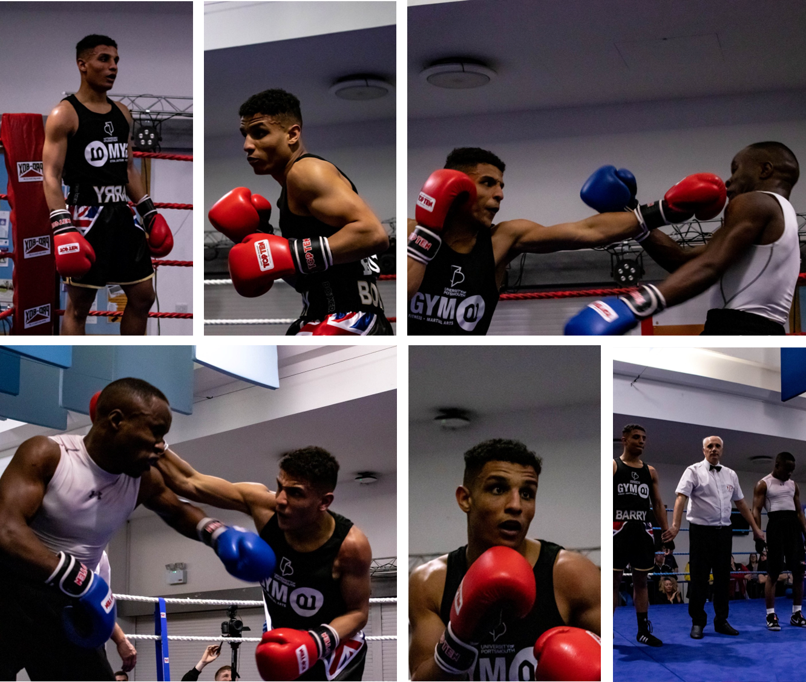

Media Image  Above is an image which is a collage of pictures from a Portsmouth boxing match. This has been implemented using a picture tag to make the image responsive. Thus, on a laptop sized screen you should see a 3 by 3 collage, then on a tablet sized screen a 3 by 2 landscape collage and on a phone sized screen a 2 by 3 portrait collage. Plus there is a 2 by 2 back-up collage image in case the picture tag isn't recognised. (Please note; that it isn't me in the pictures). Video A video of highlights from a Portsmouth boxing match. Above is a video which is a short edit of a Portsmouth boxing match. This has been implemented using a video tag. There are three sources in order to provide back-ups in case a file type isn't recognised. (Please note, that it isn't me in the video either).